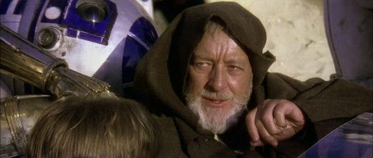
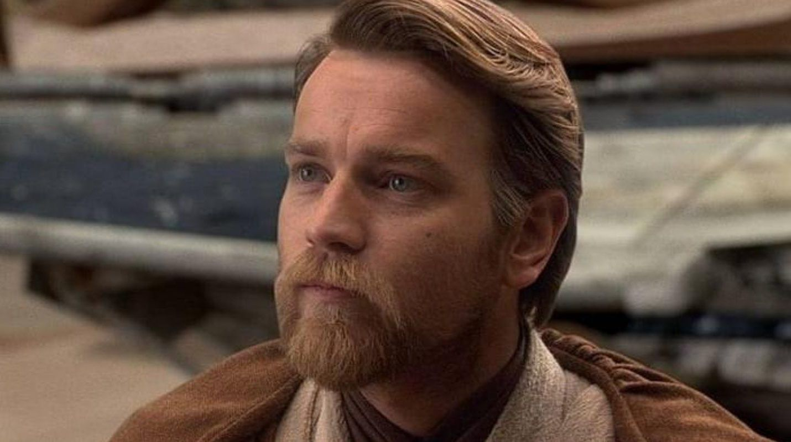

---------------------------------------------------------
Durante una de las primeras sesiones para tratar la trama de Episodio 5, se sugirió que Darth Vader arrancará el "corazón" de las partes desmembradas de C3PO en la Ciudad de las Nubes y luego aplastarlo con el puño.

---------------------------------------------------------
Tras el rodaje de 'Una nueva esperanza', la túnica usada por Alec Guinness en la película desapareció, hasta que en 2005 la encontró. Y es que resulta que fue utilizada por Universal en 'La Momia' para un personaje de fondo e incluso fue alquilada al público en general como un disfraz de monje durante las fiestas de Halloween.
---------------------------------------------------------
Ewan McGregor, el genial Obi-Wan Kenobi en la trilogía de las precuelas, no es el único miembro de su familia en aparecer en la franquicia. El primero fue Denis Lawson, su tío, que dio vida a un piloto de la Alianza Rebelde en la trilogía original.
---------------------------------------------------------